The Applied Math and Computer Science Lab in Barranquilla, Colombia, builds data assimilation, inverse-problem and optimization methods that turn noisy observations into better forecasts for weather, air quality and the city around us.
A space that brings together people from different fields of science, motivated to solve real problems through scientific computing, mathematics and statistics.
Ensemble Kalman filters, 4D-Var and hybrid MCMC schemes that fold observations into numerical models, including non-Gaussian and adjoint-free formulations.
Core lineRecovering what we cannot measure directly from what we can, with shrinkage covariance estimators and modified Cholesky decompositions.
Core lineTrust-region, line-search and random-direction methods for large, expensive objective functions.
MethodsTabu search, simulated annealing and nature-inspired algorithms applied to localization and scheduling problems.
MethodsPosterior sampling and uncertainty quantification for physical models.
MethodsRunning WRF, MPI and parallel Python on UN-HPC to make all of the above feasible at real-world scale.
InfrastructureUrban analytics, climate downscaling and PM2.5 monitoring for Barranquilla and the Colombian Caribbean.
ApplicationsExternally funded research where the lab leads or co-leads the work. Full details on the projects page.
A 1980–2100 dataset of wind, temperature and humidity for the Atlántico region, produced by downscaling NCEP-DOE Reanalysis 2 with data assimilation and machine learning. Released as the open-source TEDA framework.
Part of the ExPoR2 programme on human exposure to atmospheric pollution as a decision-making tool. The lab contributes ensemble-based data assimilation for air-quality models in the Tropical Andes.
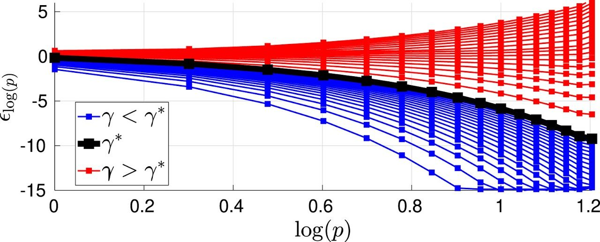
When can the linear solves inside pCN proposals be trusted? The paper gives explicit bounds on the error they introduce and a practical rule for choosing the step.
Read at the publisherJournal, conference and software papers from the group and its collaborators.
Figures from recent projects. Click one to enlarge it.
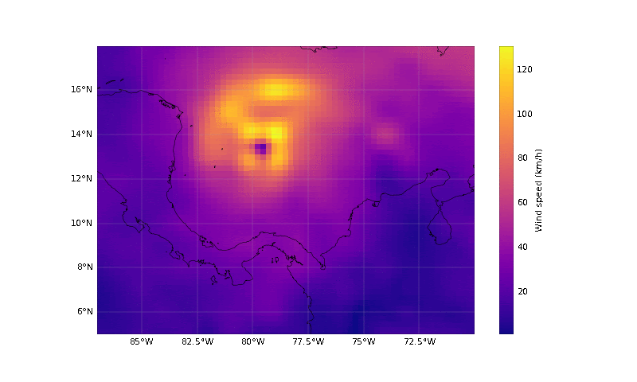
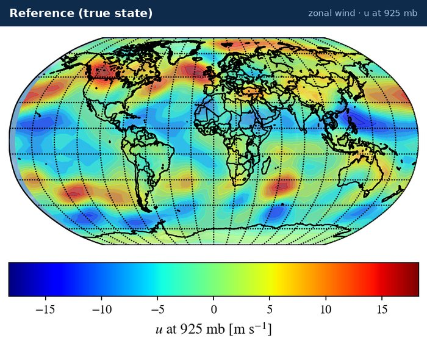
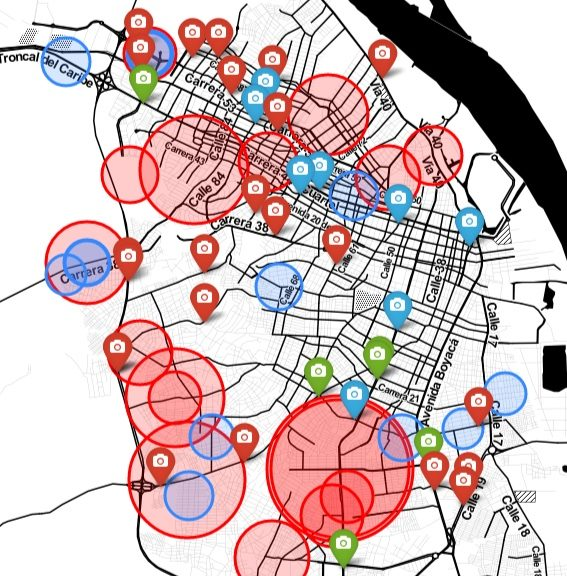
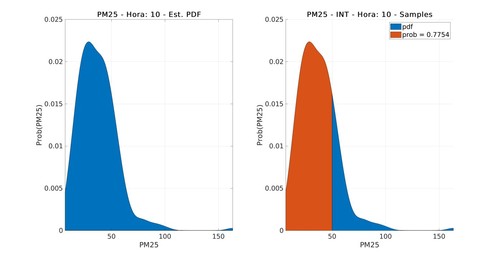
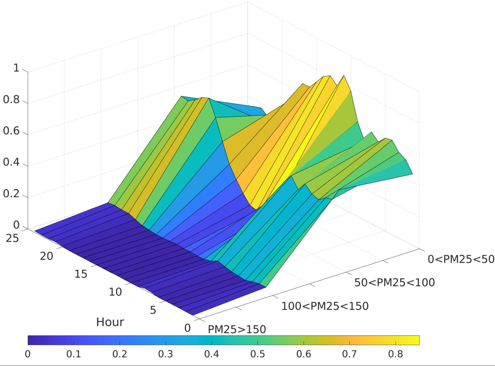
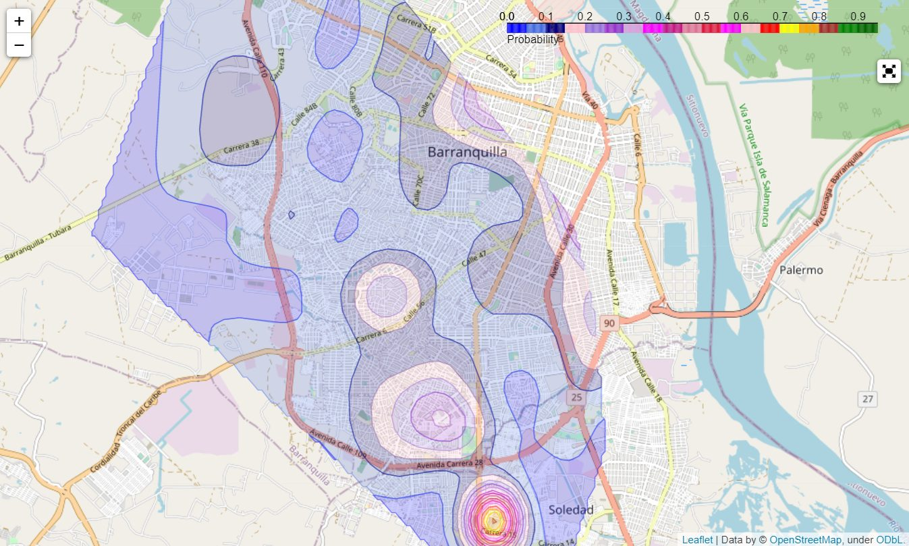
Workshops, visits and everyday life in the lab over the years. Click a photo to enlarge it.
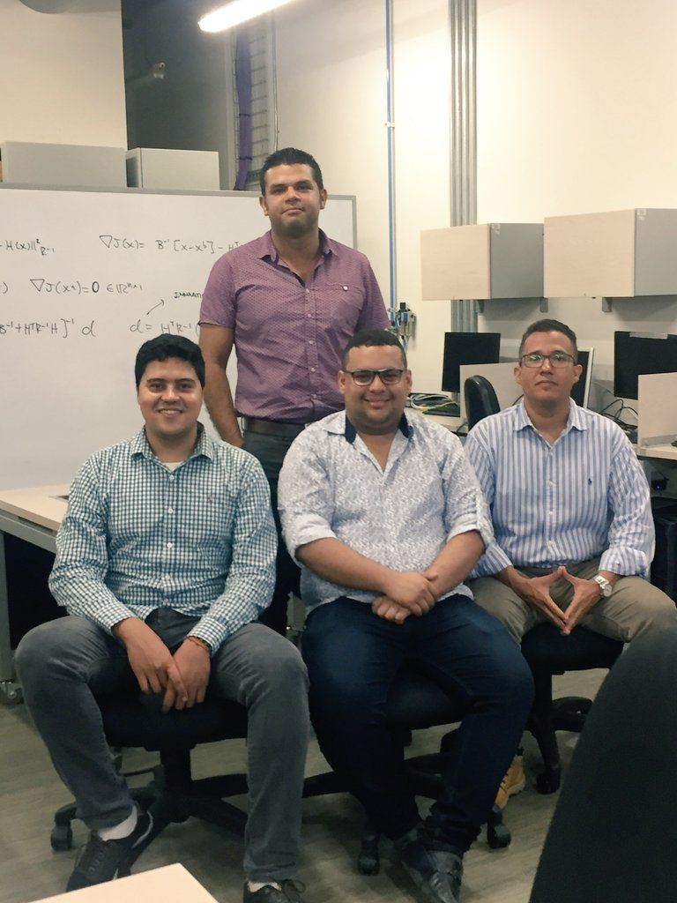
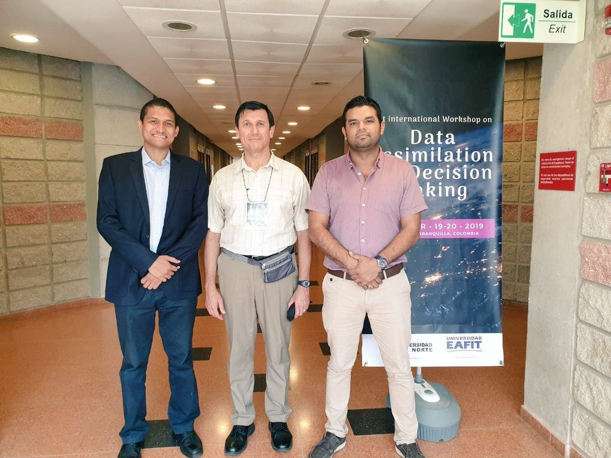
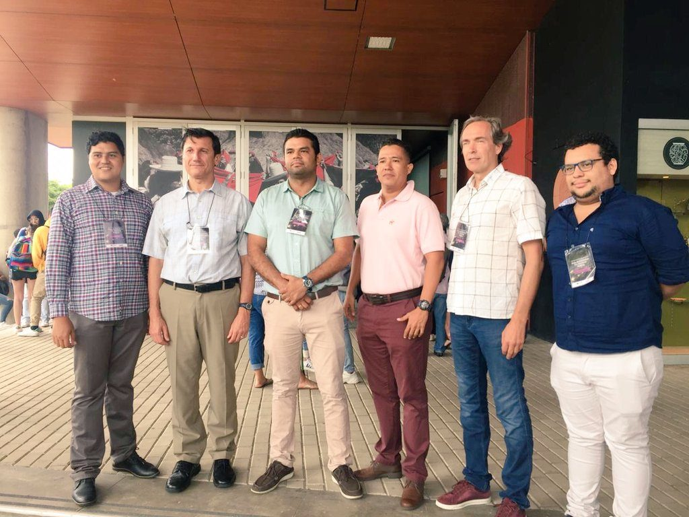
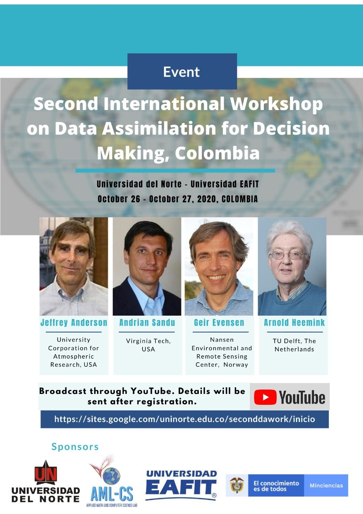
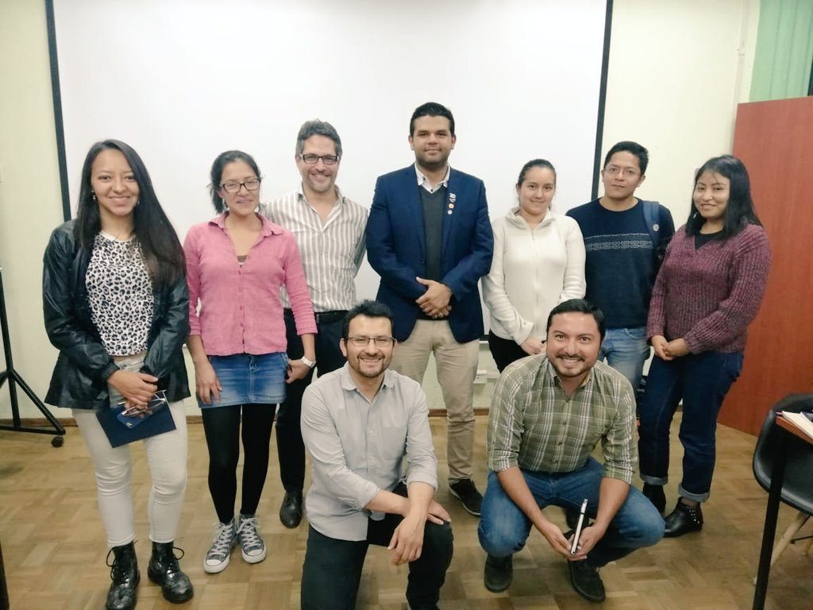
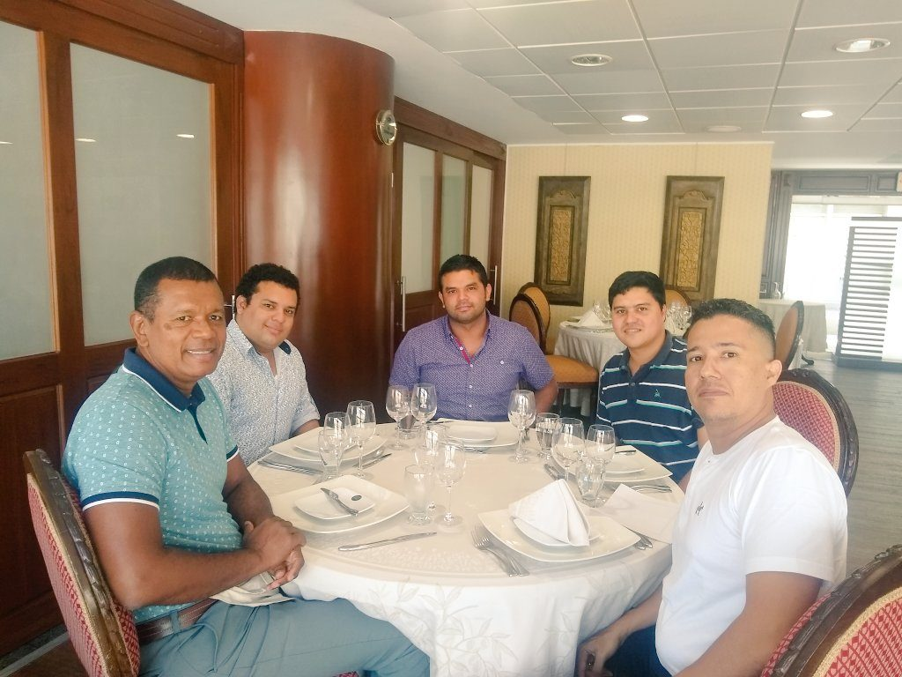
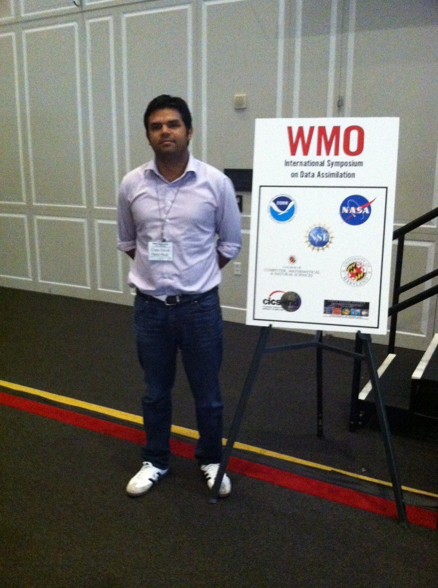
Students face problems in data assimilation, inverse problems, applied statistics and numerical optimization from their first semester in the group.
Data-driven models are of primary interest for us; it is fascinating to see what data can tell us about the underlying physical process. Feel free to contact me if you want to be part of the group.
Practical guides we wrote so that nobody has to fight the cluster twice.